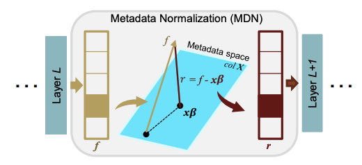

Publications

Sharon Zhou,
Jiequan Zhang,
Hang Jiang,
Torbjörn Lundh, and
Andrew Ng
Data Augmentation with Mobius Transformations
Machine Learning: Science and Technology (MLST) 2020
[Paper] [Code]
Data Augmentation with Mobius Transformations
Machine Learning: Science and Technology (MLST) 2020
[Paper] [Code]

Mandy Lu,
Qingyu Zhao,
Jiequan Zhang,
Kilian M. Pohl,
Li Fei-Fei,
Juan Carlos Niebles, and
Ehsan Adeli
Metadata Normalization
CVPR 2021: IEEE Conference on Computer Vision and Pattern Recognition, (Under Review)
Metadata Normalization
CVPR 2021: IEEE Conference on Computer Vision and Pattern Recognition, (Under Review)